- 1830 CE
- 1833 CE
- 1839-1842 CE
- 1841 CE
- 1848 CE
- 1853-1854 CE
- 1857 CE
- 1861 CE
- 1863 CE
- 1864 CE
- 1865 CE
- 1866 CE
- 1868 CE
- 1870 CE
- 1880-1914 CE
- 1882 CE
- 1884-1885 CE
- 1885 CE
- 1888-1889 CE
- 1890 CE
- 1893 CE
- 1894-1899 CE
- 1895 CE
- 1896 CE
- 1897 CE
- 1901 CE
- 1902 CE
- 1904 CE
- 1907 CE
- 1909 CE
- 1915-1917 CE
- 1917 CE
- 1918 CE
-
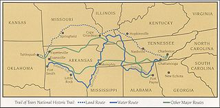
1830 CE
The U.S. Congress passes the Indian Removal Act in order to free land for settlement. The Act forces 70,000 Native Americans to relocate. The long trek westward became known as the "Trail of Tears" because of such a high death rate during the relocation.
Trail of Tears
Image credited as NPS. {{PD-USGov-NPS}} -
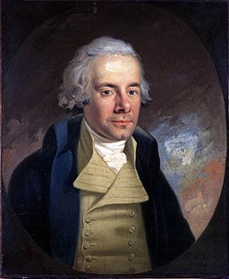
1833 CE
The British Parliament passes the Abolition Act, which abolishes the slave trade in the British Empire.
William Wilberforce - A leader in the Abolutionist movement
Anton Hickel [Public domain] -
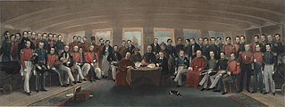
1839-1842 CE
The Chinese government prosecutes Chinese opium dealers and orders foreign merchants to respect the ban on opium. British merchants in China refuse and are expelled from the country; war subsequently breaks out. Great Britain forces China to surrender. In the Treaty of Nanking in 1842 the Chinese government is forced to cede Hong Kong to Great Britain forever, pay an indemnity of $100 million, and open four large cities to foreign trade with low tariffs.
The signing and sealing of the Treaty of Nanking
Painted by Captain John Platt, Bengal Volunteers. Engraved by John Burnet. [Public domain] -
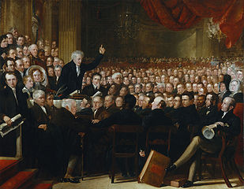
1841 CE
Russia, France, Prussia, Austria and Great Britain sign the Treaty of London, which abolishes slavery.
Treaty of London
Benjamin Haydon [Public domain] -

1848 CE
Some 200 women and men meet in Seneca Falls, New York, to draft a "bill of rights" outlining the social, civil and religious rights of women.
Woman's Rights Convention at Seneca Falls
https://pbs.twimg.com/media/CKXzBSKWwAEzQT8.jpg [CC BY-SA 4.0] -
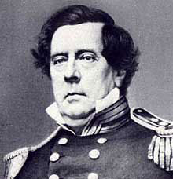
1853-1854 CE
After several unsuccessful American attempts to establish commercial relations with Japan, Commodore Matthew Perry arrives in Edo Bay and forces Japanese to sign a treaty with the United States that opened two ports to American trade.
Commodore Matthew Calbraith Perry
[Public Domain] -

1857 CE
In Dred Scott v. Sanford, the U.S. Supreme Court rules that African Americans cannot be citizens and are not entitled to the rights afforded to white men.
Dred Scott
Louis Schultze (ca.1820, Berlin, Germany) [Public domain] -

1861 CE
Tsar Alexander II issues the Edict of Emancipation, which frees the serfs in Russia.
Alexander the Liberator
https://www2.gwu.edu/~erpapers/humanrights/timeline/ -
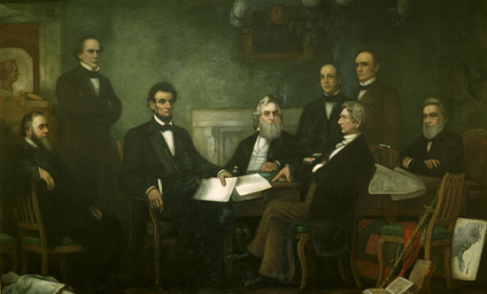
1863 CE
On January 1, President Abraham Lincoln issues the Emancipation Proclamation, declaring that "all persons held as slaves within any State, or designated part of a State, the people whereof shall be in rebellion against the United States are forever free." Henry Dunant founds the International Committee of the Red Cross in response to the lack of treatment of wounded soldiers on the battlefield of Solferino.
Lincoln signs the Emancipation Proclamation
[https://www2.gwu.edu/~erpapers/humanrights/timeline/ -

1864 CE
The Convention for the Amelioration of the Condition of Armies in the Field (First Geneva Convention) is signed, outlining the rules for protecting the wounded in wartime and grants immunity to hospital staff and the Red Cross during war.
First Genevea Convention
Kevin Quinn, Ohio, US [CC BY 2.0 (https://creativecommons.org/licenses/by/2.0)] -
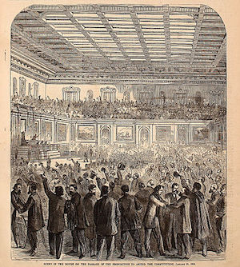
1865 CE
The Thirteenth Amendment to the U.S. Constitution abolishes slavery in the United States.
Adoption Of the 13th Amendment
Harper's Weekly, 18 February 1865 [Public domain] -
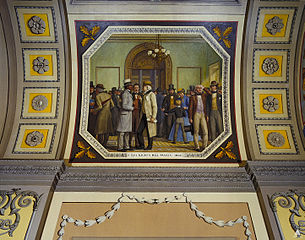
1866 CE
The Civil Rights Act of 1866 passes with one vote over President Andrew Johnson's veto. The Act proclaims that all persons born in the United States are U.S. citizens without regard to race or color.
Civil Rights Bill Passes
Civil Rights Bill Passes, 1866 [Public domain] -
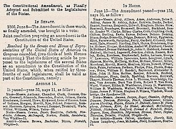
1868 CE
The Fourteenth Amendment to the U.S. Constitution declares that no state shall "deprive any person of life, liberty, or property, without due process of law; nor deny to any person within its jurisdiction the equal protection of the laws."
14th Amendment - Senate & House votes June, 1866
Edward McPherson, LL.D., Clerk of the House of Representatives of the United States, [Public domain] -
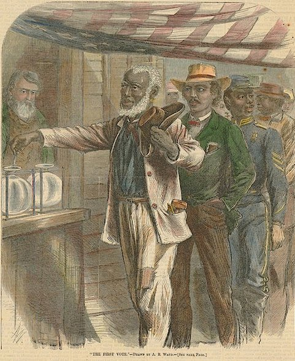
1870 CE
The Fifteenth Amendment to the U.S. Constitution states that "the right of citizens of the United States to vote shall not be denied or abridged by the United States or by any State on account of race, color or previous conditions of servitude."
African Americans vote for the first time
Alfred Waud [Public domain] -
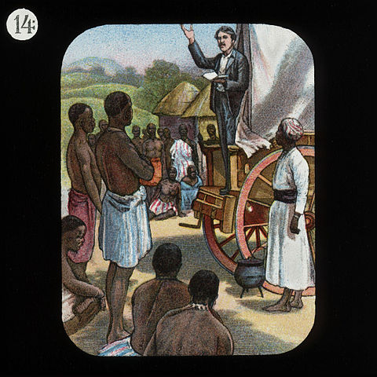
1880-1914 CE
European imperialism reaches its climax. During this time, European nations not only continued to send migrants, money, and manufactured goods around the world, but also sought to create or enlarge their political empires. The new imperialism was aimed primarily at Africa and Asia as Africans and Asians are put under the political rule of Europeans.
David Livingstone, early explorer of the interior of Africa and fighter against the slave trade
[Public domain] -
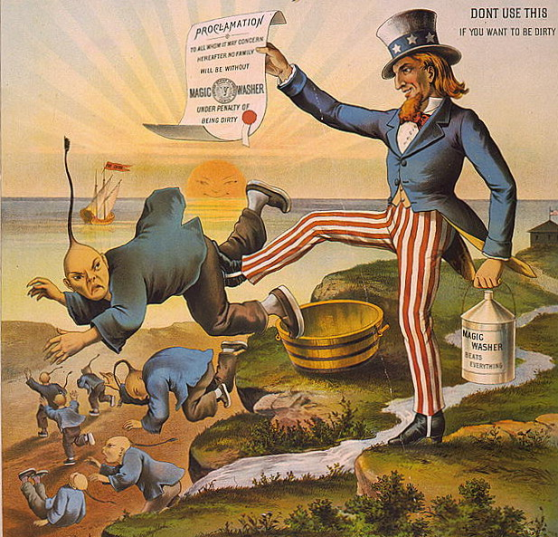
1882 CE
The U.S. Congress passes the Chinese Exclusion Act, which prohibited citizenship for Chinese immigrants.
Political cartoon (1886): Uncle Sam kicks out the Chinaman
The George Dee Magic Washing Machine Company [Public domain] -
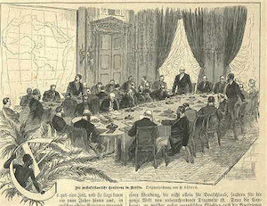
1884-1885 CE
The Berlin Conference divides Africa amongst the European powers without any regard to the indigenous people. The conference also agrees to work to stop slavery and the slave trade in Africa.
The Berlin Conference on partition of Africa, 1884
See page for author [Public domain] -
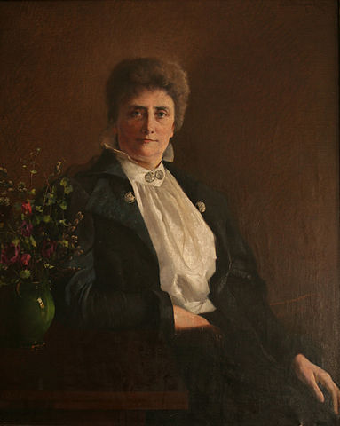
1885 CE
A Woman Suffrage Society is founded in Norway.
Norwegian Association for Women's Rights
Asta Nørregaard [Public domain] -
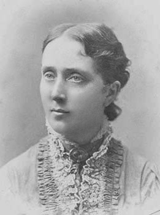
1888-1889 CE
An Australian Women Suffrage League and a Danish Women Suffrage Society are founded.
Rose Scott - Early Australian feminist
State Library of New South Wales [Public domain] -

1890 CE
The National Women Suffrage Association is founded. The Brussels Conference ratifies the Berlin Conference.
National Woman Suffrage Association formed on May 15 1869
Library of Congress [Public domain] -
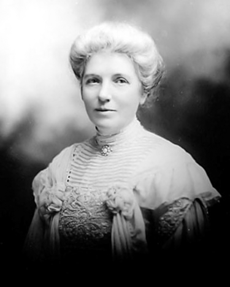
1893 CE
New Zealand becomes the first nation to grant women the right to vote.
Kate Sheppard was the most prominent member of New Zealand's women's suffrage movement.
New Zealand public domain -
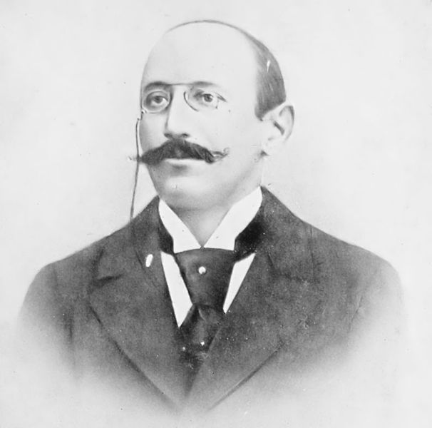
1894-1899 CE
Alfred Dreyfus, a Jewish officer in the French army, is convicted of treason based on fabricated evidence by the French Army. The "Dreyfus Affair" divides French society and is representative of anti-Semitic feelings in Europe at the time. Dreyfus was pardoned in 1899.
Dreyfus: a 35-year-old Alsatian French artillery officer
Public Domain Image -
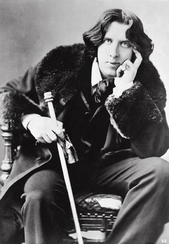
1895 CE
Oscar Wilde goes on trial in England for homosexual activity. An Australian Court declares that women are not persons.
Oscar Wilde: Irish poet and playwright
https://www2.gwu.edu/~erpapers/humanrights/timeline/ -
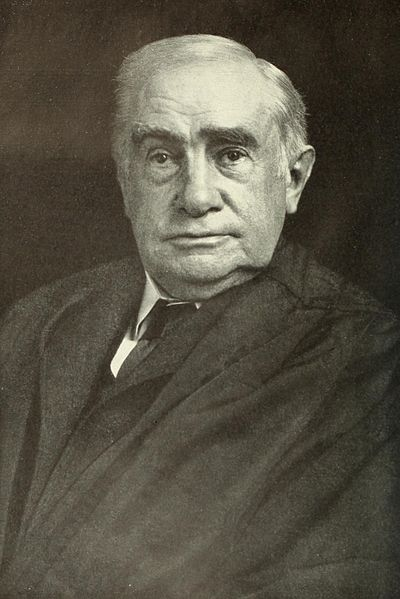
1896 CE
In Plessy v. Ferguson, the U.S. Supreme Court rules that segregation is constitutional as long as facilities are "separate but equal."
Justice Henry Billings Brown wrote the majority opinion in Plessy
The World's Work, 1906 [Public Domain] -
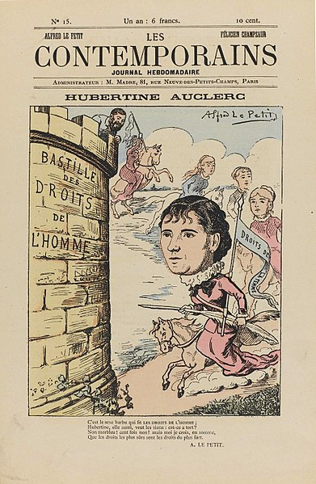
1897 CE
In France, the Socialist Congress demands equality for women.
Hubertine Auclerc attacking the fortress of Men's Rights
Alfred Le Petit [Public Domain] -
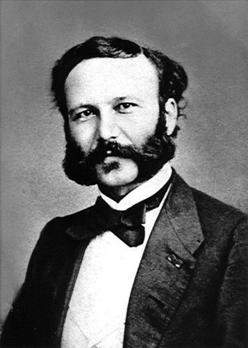
1901 CE
Henry Dunant, founder of the Red Cross, and Frederic Passy, a leading international pacifist, are awarded the first Nobel Peace Prize.
Henry Dunant, a Swiss humanitarian
https://www2.gwu.edu/~erpapers/humanrights/timeline/ -
1902 CE
The Australian Parliament passes the Commonwealth Franchise Act denying "aboriginal natives of Australia, Asia, Africa or the Islands of the Pacific except New Zealand" the right to vote. The International Women Suffrage Alliance is founded.
-
1904 CE
An International Congress of Women meets in Berlin.
-
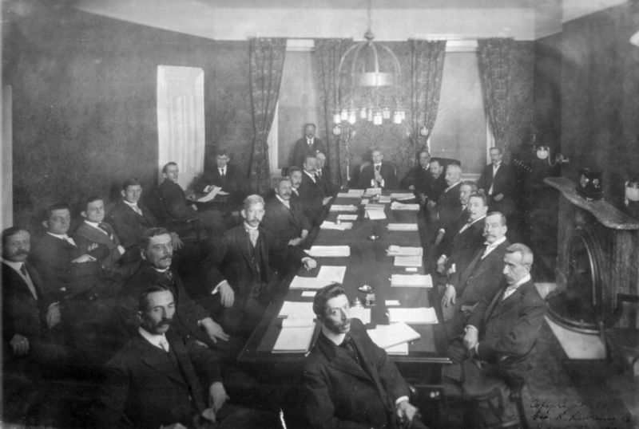
1907 CE
The Central American Peace Conference provides for the right of aliens to appeal to courts where they reside.
Opening session of the Central American Peace Conference
Geo. R. Lawrence Co. [Public domain] -
1909 CE
The National Association for the Advancement of Colored People (NAACP) is founded in New York City for the purpose of improving the conditions of colored people.
-
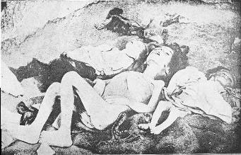
1915-1917 CE
The Ottoman Empire carries out the first genocide of the 20th century on the Armenian population in the empire. Hundreds of thousands of Armenians are tortured and executed. Millions are forced from their homes and marched across deserts to resettlement areas. It is estimated that one and a half million Armenians died during the genocide.
-
1917 CE
The U.S. Congress passes the Asiatic Barred Zone Act, prohibiting immigration to the United States from mostly Asian countries.
-
1918 CE
The Australian Parliament passes the Aboriginal Ordinance ushering in the "protectionist era" which strips the aboriginal populations of many of their basic rights. The U.S. Congress passes the U.S. Sedition Act, which outlaws "any disloyal, profane, scurrilous, or abusive language about the form of government of the United States, or Constitution of the United States."